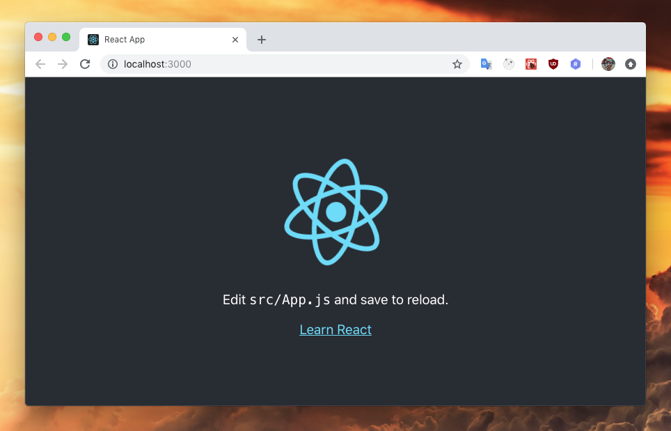
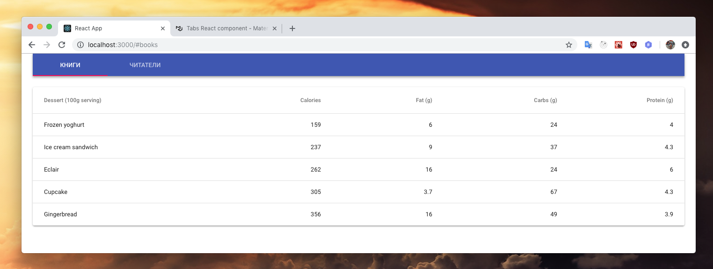

Онлайн версия доступна по ссылке
Инициализируем пустое приложение с помощью программы create-react-app для этого выполним команды npx create-react-app frontend; cd frontend; yarn start
Заготовка приложения доступна по адресу http://localhost:3000/

Выполним команду yarn add @material-ui/core и yarn add @material-ui/icons
Выполним шаги из инструкции на компонент табов https://material-ui.com/demos/tabs/
Выполним шаги из инструкции на компонент таблицы https://material-ui.com/demos/tabs/
И в результате получим такое прекрасное приложение http://localhost:3000/
